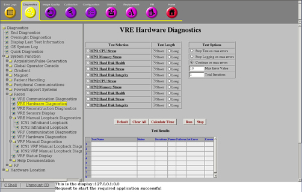
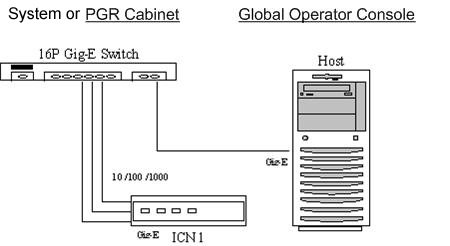

Proprietary to General Electric
Direction 5500113, Rev# 3
Discovery MR750 3.0T Service Methods
Module Version 2.0, Version Date 5/18/10
Proprietary to General Electric |
This document contains information on the following VRE diagnostics:
ICN CPU Stress
ICN Memory Stress
ICN Hard Disk Health
ICN Hard Disk Stress
ICN Hard Disk Integrity
Diagnostics → System Function → Recon → VRE Hardware Diagnostics
Diagnostics → Hardware Location → PGR Cabinet → Recon → VRE Hardware Diagnostics
Illustration 1: VRE Hardware Diagnostics

The purpose of each diagnostic is explained in the tables below.
Table 1: Purpose of Diagnostics
| Diagnostic Type | Purpose |
|---|---|
| ICN CPU Stress | To ensure that the ICN can withstand a CPU (Central Processing Unit) stress test. |
| ICN Memory Test | To stress the memory on the ICN. While this diagnostic is designed to stress the memory, it also makes heavy use of the DMA, main disk drive and motherboard of the respective ICN. |
| ICN Hard Disk Health | To verify the SMART health status for all hard disks on an ICN. SMART refers to the Self-Monitoring Analysis and Reporting Technology system present on the ICN hard drives. SMART contains information about hard drive parameters, which can be used to predict failures. |
| ICN Hard Disk Stress | To test the disk throughout for all of the hard disks on an ICN. Hard disks store acquisition data for certain applications in DVMR. This diagnostic essentially verifies the ICN hard disk performance is fast enough to keep up with the incoming data during acquisition. |
| ICN Hard Disk Integrity | To test the integrity for all hard disks on an ICN. Hard disk store acquisition data for certain applications in DVMR. This diagnostic essentially verifies the ICN hard disks can be used to reliably store and retrieve data by writing a known pattern to the acquisition partitions, reading it back, and comparing the contents. |
The ICN CPU Stress Diagnostic tests the ICN motherboard. The other diagnostics test the ICN hard disks.
The ICN is turned on and has at least one network connection from the ICN motherboard Ethernet port to the Host.
Illustration 2: System Cabinet and GOC Diagram

Select the appropriate diagnostic from the VRE Hardware Diagnostics screen.
Click [Run].
| NOTE: | Once [Run] is clicked, do not click anywhere else in the Common Service Desktop until the test is complete. If it is necessary to abort the test prior to its completion, click [Stop]. |
Ensure that the ICN passes the diagnostic by reviewing the status in the Test Results table.
The ICN CPU Stress diagnostic has either a passed or failed status. If the diagnostic has failed, review the error log and corresponding extended error messages for subsequent actions. Additional responses to the diagnostic's failed result are outlined in the table below.
Table 2: Diagnostic Results
| Result | Description | GE Field Action | ||
|---|---|---|---|---|
| Passed | The ICN passed the diagnostic. | No further action required. | ||
| Failed | The ICN failed the diagnostic. |
|
The ICN Memory Stress and ICN Hard Disk Health diagnostics have either a passed or failed status. If either diagnostic fails, review the error log and corresponding extended error messages for subsequent actions. Additional responses to the diagnostic's failed result are outlined in the table below.
Table 3: Diagnostic Results
| Result | Description | GE Field Action | ||||
| Passed | The ICN passed the diagnostic. | No further action required. | ||||
| Failed | The ICN failed the diagnostic. |
|
The ICN Hard Disk Stress diagnostic has either a passed or failed status. If the diagnostic has failed, review the error log and corresponding extended error messages for subsequent actions. Additional responses to the diagnostic's failed result are outlined in the table below.
Table 4: Diagnostic Results
| Result | Description | GE Field Action | ||||
|---|---|---|---|---|---|---|
| Passed | The ICN passed the diagnostic. | No further action required. | ||||
| Failed | The ICN failed the diagnostic. |
|
The ICN Hard Disk Integrity diagnostic has either a passed or failed status. If the diagnostic has failed, review the error log and corresponding extended error messages for subsequent actions. Additional responses to the diagnostic's failed result are outlined in the table below.
Table 5: Diagnostic Results
| Result | Description | GE Field Action | ||
|---|---|---|---|---|
| Passed | The ICN passed the diagnostic. | No further action required. | ||
| Failed | The ICN failed the diagnostic. |
|